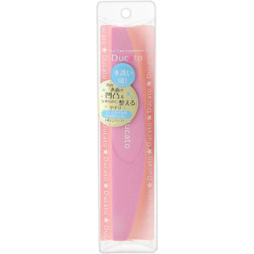

返回列表
产品名称：デュカート スポンジバッファ（ハーフムーン型）

シャンテイ デュカート スポンジバッファ（ハーフムーン型） ＿
メーカー シャンテイ
JANコード 4901604461517
商品の特徴
○水洗い可！
○爪の表面の凹凸をなめらかに整えるやすり
成分・分量
スポンジ：EVA、セラミック研磨材
中芯：PS
用法及び用量
1ピンクの粗い面（150グリット）を使用して爪表面の凹凸をなくします。
2ホワイトの細かい面（320グリット）で滑らかに仕上げます。
※さらに2wayバッファを使用するとより美しいツヤがでます。
※グリットとは・・・数が多いほど目の細かいやすりになります。